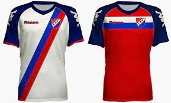

El Club Atlético Piraña fue fundado el 12 de septiembre de 1942 en el barrio porteño de Parque Patricios. Su primer presidente, Alcides Solé, mantenía una estrecha amistad con Jaime Sarlanga, goleador de cuna tigrense que tuvo paso por Ferro y, en aquel momento, Boca. El curioso nombre de la institución encuentra origen en el apodo de Sarlanga, al cual llamaban “Piraña” y que a Solé gustó al ser sinónimo de goles. El Club Piraña se afilió a la AFA en 1961 junto con Arsenal de Sarandí y Villa Dálmine, entre otros. Su clásico rival es Victoriano Arenas de la localidad de Valentín Alsina, partido de Lanús, en la zona sur del conurbano bonaerense. Su primer partido oficial lo jugó contra otra institución humilde, pero de Sarandí: Arsenal, el equipo de los Grondona. Ese día no hubo ni vencedores ni vencidos. Fue 1-1. En el campeonato de 1965, el club sería protagonista del torneo al terminar primero del Grupo A y luego 3° en la Fase Final, jugándose un triangular para definir al campeón y único ascendido; en esta instancia venció a Centro Español por 4 a 2, sin embargo cayó por 3 a 2 ante General Mitre que ya había vencido a Centro y se consagró campeón. Piraña siguió jugando en Primera D, hasta que en 1978 dio la gran sorpresa. El equipo que era dirigido por Marino Colágero clasificó para la ronda final por el título. A mitad de ese torneo, Sacachispas presentó una protesta masiva por infracción al reglamento referido a la edad de los jugadores (no podían jugar más de 4 jugadores mayores de 25 años). La AFA investigó y hubo sanciones: 15 partidos fueron dados por perdido a los dos equipos y se modificaron otros 6 resultados. Entre los sancionados estuvieron 14 de los 15 clubes que disputaban la fase final: Justo José de Urquiza, Sacachispas, Midland, Cañuelas, Ituzaingó, Laferrere, San Miguel, Puerto Nuevo, General Belgrano, Argentino de Merlo, Brown, Victoriano Arenas, Central Ballester y San Martín. Piraña fue un canto a la honestidad; pero igualó en puntos con Urquiza y debieron disputar una final por el ascenso. Subió a la C al ganarle 4 a 1 a Justo José de Urquiza en la vieja cancha de Argentinos, en un partido en el que estuvo presente el historiador Daniel Console. Para colmo, ganaba Urquiza 1 a 0 con gol de Villalba. Con todo en contra, el equipo del temido pez, se repuso y triunfó 4 a 1 con un gran partido de Bianca y la dirección técnica de Mariano Calógero, quien había sido jugador de la entidad. Fue la gran alegría para el club barrial. Ya no estaba su jugador más recordado: Héctor “Chirola” Yazalde, quien en 1967 había sido transferido a Independiente para ganar mucho en la entidad de Avellaneda con su capacidad goleadora que lo llevó a Portugal, Francia, Newell’s y Huracán. Cabe destacar que en ese mismo campeonato, Piraña obtendría la mayor goleada de su historia al vencer a Puerto Nuevo en condición de visitante por siete tantos contra cero. Jugó la C en 1979, donde pese a ocupar el último puesto tras ganar solo 2 de 38 partidos se encontró allí con Lanús que actualmente juega en la primera división, quien lo derrotó por 6 a 1 haciendo Piraña de local en Huracán. El Dr. Néstor Bova en su libro "96 años de fútbol granate" hace un repaso prolijo de toda la campaña del equipo granate, que fue quizás el rival más importante que tuvo en su corto paso Piraña por el fútbol de AFA. Los únicos dos partidos que ganó en la Primera C fueron por el mismo marcador, 2 a 0. El primero de ellos a Defensores de Cambaceres (jugado en cancha de Huracán) y el segundo a Excursionistas en condición de visitante. La alegría de Piraña pareció la cúspide del fin: 1979 en la C, 1980 otra vez en la D. Se despidió de la AFA el 30 de agosto de 1980, ya que pese a derrotar a Cañuelas 1 a 0, quedó último en la tabla y fue desafiliado por un año. Como el fútbol era deficitario y ponía en riesgo la continuidad del club, los directivos decidieron desvincularse de la AFA y no participar más en sus torneos. Con la suspensión de las afiliaciones en vigencia, el club permaneció cerrado durante más de tres décadas y su estadio fue abandonado y allanado por la policía.
En 2017 comenzó a competir nuevamente en fútbol juvenil por el Torneo de Liga Argentina bajo la coordinación de Jorge Leonardo Barquín, con pasado en Excursionistas, Nueva Chicago e Independiente, entre otros. Luego de varios años, el Club Atlético Piraña vuelve a tener divisiones inferiores de fútbol amateur. A fines del mismo año, el Club es mencionado en una publicidad televisiva de una empresa de telefonía móvil, mostrándose imágenes de algunos jugadores que defendieron los colores de la institución, logrando su único título oficial en 1978. En marzo de 2021, expresó su deseo de volver a afiliarse directamente a la Asociación del Futbol Argentino, para participar en la Primera D.
La camiseta titular en sus orígenes fue de color blanco con dos franjas en rojo y azul, mientras que la alternativa lo era de color rojo pero con franjas en azul y blanco. Actualmente es blanca con dos rayas oblicuas, una roja y la otra azul.
